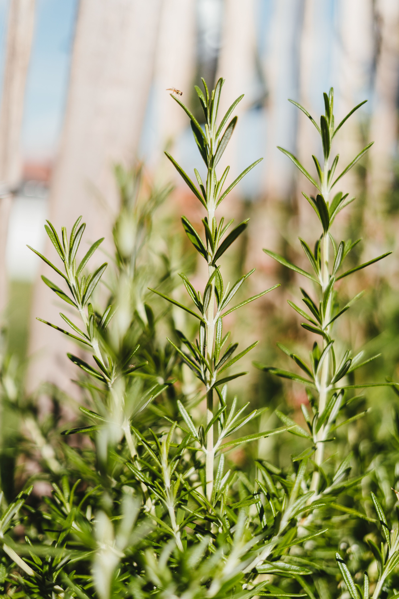
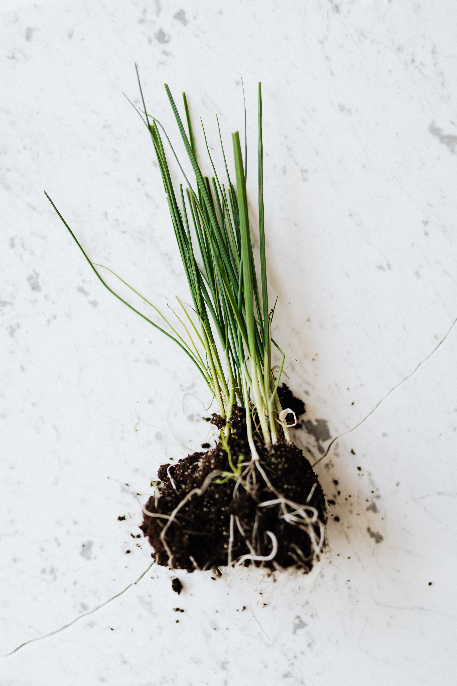
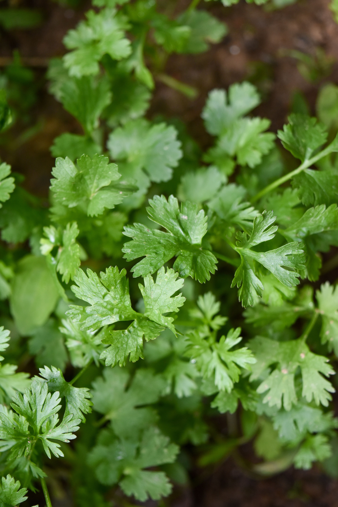
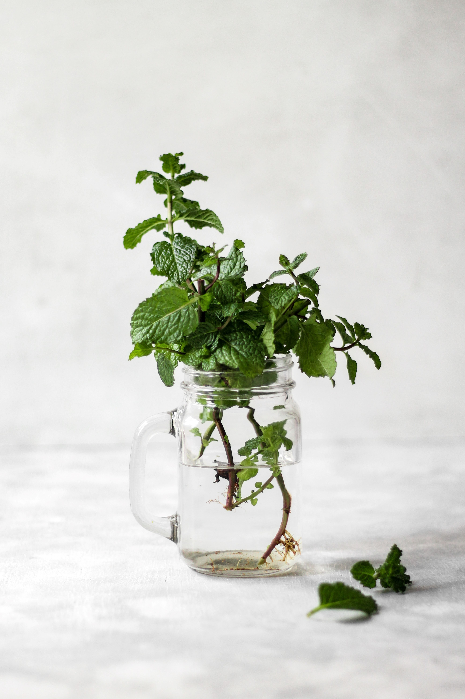

As ervas aromáticas são plantas cultivadas principalmente por suas folhas, flores ou sementes, que possuem um aroma característico e são utilizadas para adicionar sabor e aroma às preparações culinárias. Alguns tipos conhecidos são:
- Manjericaõ
- Hortelã
- Alecrim
- Salsinha
- Coentro
- Orégano
- Cebolinha
Cuidados
- Solo: A maioria das ervas aromáticas prefere um solo bem drenado e fértil. Utilize uma mistura de solo leve e arejado, com boa capacidade de retenção de água.
- Plantio: Escolha um vaso ou canteiro com drenagem adequada e plante as mudas ou sementes das ervas aromáticas. Siga as instruções específicas de plantio para cada tipo de erva, pois algumas podem exigir uma profundidade específica de plantio.
- Temperatura: As ervas aromáticas têm preferências variadas de temperatura, mas a maioria cresce bem em climas amenos a quentes. Certifique-se de verificar a faixa de temperatura adequada para cada erva específica e forneça o ambiente apropriado.
- Rega: As ervas aromáticas geralmente preferem umidade moderada. Regue as plantas sempre que o solo estiver seco ao toque, evitando encharcar. A quantidade de água necessária pode variar de acordo com a erva e as condições ambientais.
- Luminosidade: A maioria das ervas aromáticas precisa de luz solar direta para um crescimento saudável. Posicione-as em um local ensolarado, onde recebam pelo menos 4 a 6 horas de luz solar direta por dia. Caso não tenha acesso a luz solar suficiente, você pode considerar o uso de luz artificial.
- Colheita: A colheita das ervas pode ser feita quando as plantas atingirem um tamanho adequado. Corte as folhas e os ramos conforme necessário, deixando sempre um pouco da planta para continuar crescendo. A colheita regular estimula o crescimento saudável e o sabor das ervas.
| Tabela de Cuidados | |
|---|---|
| Luz Solar: | Luz solar direta por mais de 4 horas. |
| Rega: | Solo com umidade moderada, sempre regando depois que o solo estiver seco. |
| Temperatura: | Temperatura amena e quente de acordo com a espécie. |
Galeria



